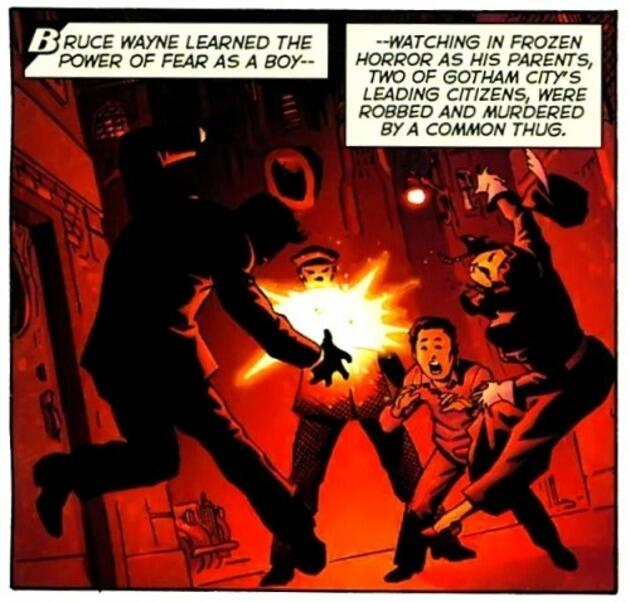

|
| Antes de convertirse en el mejor detective del mundo y cuando aún era un niño, el millonario Bruce Wayne vio morir a sus padres durante un asalto. Este asesinato definió su vida y lo impulsó a convertirse en el arma definitiva contra el crimen: Batman. Su constante determinación por alcanzar la perfección humana le ha hecho fama de ser el superhéroe más temido por los mafiosos de Gótica, misma cualidad que parece siempre colocarlo cinco pasos adelante de sus enemigos. Sin embargo, ¿hasta dónde será capaz de llegar para proteger a los inocentes? |

|
|
|  |
El inicio de la idea de lo que es BATMAN, algunos podrian decir que es cuando sucede el ascesinato de Thomas y Martha Wayne (sus padres) mientras que el se queda llorando en el regaso de sus padres esperando a que llegue la policia, y esto es en cierta parte verdad.
Batman es un símbolo que representa la luz en la oscuridad, nunca espera el reconocimiento de la gente, de los suyos, solo hace lo impensable para salvar a la gente, para que otros no pasen lo mismo que él pasó de niño. |
En la popular serie TOWER OF BABEL fuimos testigos de su nivel de inteligencia, pues El caballero oscuro es especialista en estudiar incluso a sus amigos, para encontrar sus debilidades y así incapacitarlos en caso de que algo salga mal. O por ejemplo, si la LIGA DE LA JUSTICIA se vuelca en contra de la humanidad. En algunas ocasiones sus métodos son cuestionables, pero no hay que olvidar su alto sentido de justicia y moral prueba de todo. Como ha quedado más que probado en historias como THE KILLING JOKE, A DEATH IN THE FAMILY y BATMANYEAR TWO, por mencionar algunas de sus más destacadas historias.
Por ultimo,en nuestro menu encontraras todo lo que busques de batman. ¡Que disfrutes la pagina!
{kind=link}